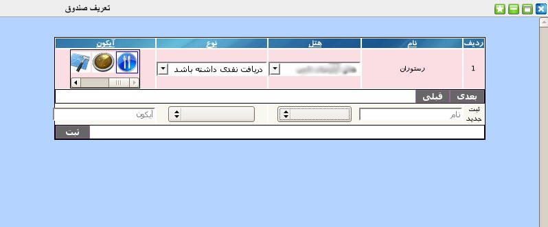

۱-تعریف صندوق
پنل تعریف صندوق یکی از پنل های مدیریتی است که در آن صندوق های موجود در هر مجموعه تعریف می شود. این پنل دارای جدولی با ۵ ستون که شامل نام صندوق, نام هتلی که صندوق برای آن تعریف می شود و نوع دریافت وجه و همچنین آیکن نمایش صندوق در نرم افزار می باشد.

برای ثبت صندوق جدید از قسمت پایین پنل ابتدا عنوان صندوق را وارد نمایید. سپس نام هتل را از لیست کشویی انتخاب کنید و در انتها نحوه دریافت وجه که نقدی یا غیر نقدی می باشد را انتخاب نمایید. پس از کلیک بر روی دکمه ثبت صندوق تعریف می شود و شما می توانید آیکن مورد نظر خود را برای نمایش این صندوق از لیست ستون آخر انتخاب نمایید.
جهت ویرایش مقادیر هر آیتم بر روی آن کلیک نمایید و پس از تصحیح کلید Enter را بزنید.